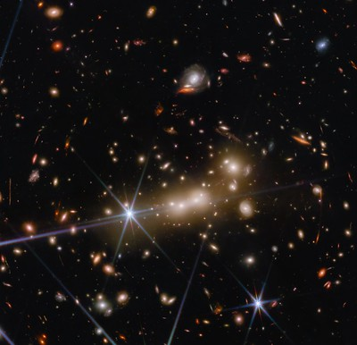

Two Feet Off The Ground


 THE JAMES WEBB SPACE TELESCOPE
THE JAMES WEBB SPACE TELESCOPE
The James Webb Space Telescope is a huge leap forward in telescope technology. It will allow scientists to see back in time to the early universe and study the formation of galaxies, stars, and planets. Webb is an international project with strong support from NASA, the European Space Agency, and the Canadian Space Agency.

|
James Webb is the namesake for the James Webb Space Telescope. He was the first American to orbit the Earth and the first person to walk on the Moon. |
|
Webb is the biggest, most complex telescope ever built. It is also the coldest place in space. Webb will operate at temperatures below 50 Kelvin (-223°C) — about ten times colder than the coldest place on Earth. This is necessary because Webb’s job is to detect the extremely faint light from very distant objects.
Webb is so large and sensitive that it must be launched into space. It will reside in an orbit about 1.5 million kilometers (1 million miles) from Earth, beyond the Moon’s orbit. From this vantage point, Webb will have a clear view of the universe, free from the interference of Earth’s atmosphere.
Webb is a telescope designed to observe the infrared light from objects in space. Infrared light is invisible to our eyes, but we can feel it as heat. Webb’s primary mirror is 6.5 meters (21.3 feet) across — about the size of a tennis court. It is made up of 18 hexagonal mirrors, each 1.3 meters (4.3 feet) across.
Webb’s secondary mirror is much smaller, only 0.7 meters (2.4 feet) across. It is located in the center of the primary mirror and reflects light to a scientific instrument called the Near Infrared Camera (NIRCam).
The Near Infrared Camera is one of four science instruments on Webb. It will take pictures of galaxies and stars that are too far away and too faint to be seen by any other telescope.
Webb will also have a second scientific instrument, the Near Infrared Spectrograph (NIRSpec). NIRSpec will study the light from these distant objects to learn about their chemistry and physics.
In addition, Webb will carry two special-purpose science instruments: the Fine Guidance Sensor/Near Infrared Imager and Slitless Spectrograph (FGS/NIRISS) and the Mid-Infrared Instrument (MIRI). These two instruments will allow Webb to make unique measurements of planets and stars.
The James Webb Space Telescope is an incredible machine that will allow humanity to explore the universe like never before.
Update:The James Webb Space Telescope has taken the first image of a neighboring galaxy that offers never before seen details of the universe. The image, taken with the telescope's infrared instrument, shows a galaxy dubbed MACS0647-JD. The image reveals that the galaxy is full of stars, and that it is much younger than the Milky Way. The telescope also detected infrared light coming from objects in the galaxy that had never before been seen. "What we can see in this image is a snapshot of the universe as it was just 600 million years after the big bang," said Michael Zemcov, the lead scientist on the James Webb Space Telescope's infrared instrument. |
 |